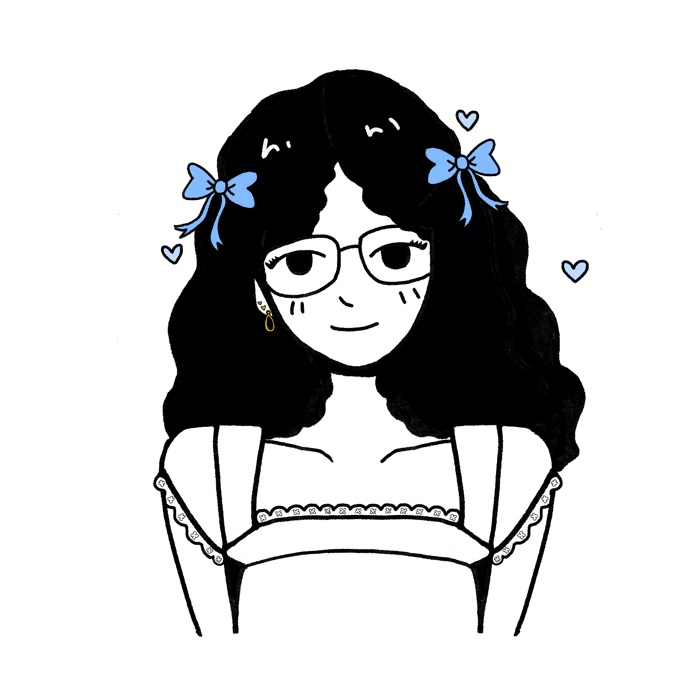

SOPHIE ANNE
HERNANDEZ

Hello, my name is Sophie, I am UX designer specializing in bridging the gap between design ✏️️ and code 💻
projects


EDUCONNECT

QUILLY
about

- 🗣️ Name:
- Sophie Anne S. Hernandez
- 💼 Current Job:
- Data Center Technician Level 2 at Google
- 👩🏻🎓 College & Major:
- University of California - Santa Cruz, majored in Computer Science
- 🧸 Hobbies:
- Traveling, reading, playing video games, playing volleyball, baking, cooking, collecting blind boxes, & drawing
- 🖍️ UX Specialization:
- I blend UX designs with front-end code and personal, hand-drawn visuals.
- 👩🏻💻 My Story:
-
In college, I gained a strong foundation in development and explored various programming languages.
While building web apps, I discovered my passion for front-end development—especially designing
intuitive, user-friendly interfaces.
That curiosity led me to UX design, where I found the perfect balance of creativity, problem-solving, and empathy. Now, I'm focused on creating thoughtful digital experiences that put users first.